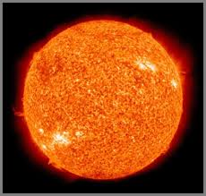

THE SUN

Sun is the star at the center of
the Solar System.It is a nearly perfect
sphere of hot plasma,with internal
convective motion that generates a magnetic field
via a dynamo process.It is by far the most important
source of energy for life on Earth. Its diameter is about 1.39
million kilometers, i.e. 109 times that of Earth, and its mass
is about 330,000 times that of Earth, accounting for about 99.86%
of the total mass of the Solar System.About three quarters of
the Sun's mass consists of hydrogen (~73%); the rest is mostly helium
25%),with much smaller quantities of heavier elements, including oxygen,
carbon,neon, and iron.
COMPOSITION OF VARIOUS GASES IN SUN:
- Hydrogen - 73.46%
- Helium - 24.85%
- Oxygen - 0.77%
- Carbon - 0.29%
- Iron -0.16%
- Neon -0.12%
- Nitrogen -0.09%
- Silicon -0.07%
- Magnesium -0.05%
- Sulfur -0.04%